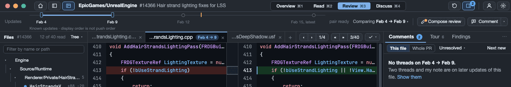
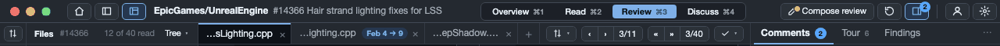
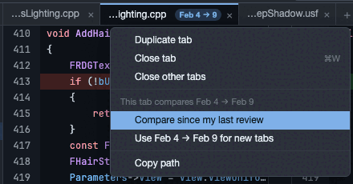
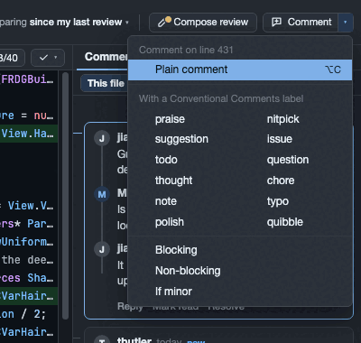
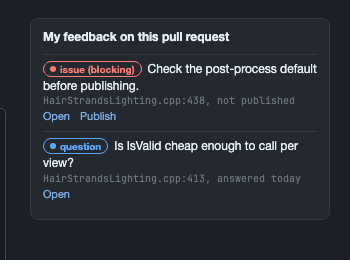
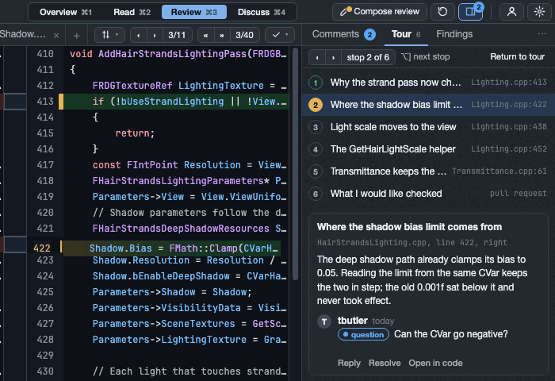
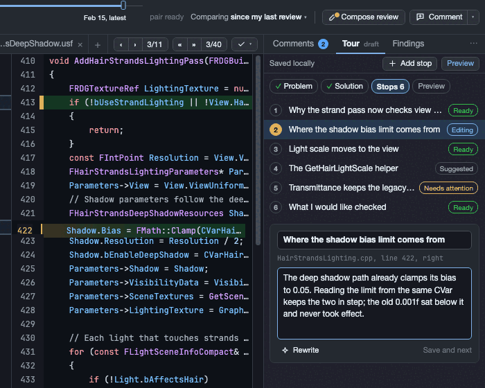

The review workbench's scaffolding, with tabs
Round v3 cleared the title row, gave every column a header and drew two ways to hold the Updates line. This round brings back RFC-BPR-0025's document tabs, which you set aside to get the workbench working. Each tab keeps its own file, comparison and reading position; new tabs take the window's comparison. The tabs sit in the comparison's header, so they cost 2 pixels, not a row.
The window's rows at 1280×852 on macOS, half scale, measured on the frames. A and C are v2's frames; the others are this round's, with the tab row.
How tabs work here
- A tab is a view: a file, a pair of updates and a reading position. Clicking a file reuses the active tab; ⌘-click or Open in New Tab opens another, and Duplicate Tab copies the view exactly. Previous and next file change the active tab, as RFC-BPR-0025 specifies.
- The window has a comparison; a tab can have its own. New tabs take the window's comparison. A tab that compares a different pair says so on its label, so two tabs on one file are never mistaken for each other. The tab's menu can return it to the window's comparison, or make its pair the one new tabs take.
- The Updates line, or the rail, shows the active tab's pair. It stays where it is and its handles move when you switch tabs. Overview and Discuss have no tab, so they show the window's comparison.
- A tab over an older pair tells the truth about threads. Threads made on later updates aren't placed on its lines; the tray says how many exist and offers them. A new comment starts only on the current head, as today, so Comment here doesn't appear there.
- Review details moves into the comparison's menu, since it discloses the comparison's anchors. The tab row keeps the change and file positions and this file's progress.



Where every control goes
| Control | Today | T, the Updates line kept | V, the vertical rail |
|---|---|---|---|
| Stays in the title row | |||
| Home, the drawer toggles, the pull request's name, the modality, refresh, account, settings | Title row | Title row, with room for the whole name | Title row |
| New comments count | Title row, with Next new comment | A badge on the Comments toggle and tab; ⌥N unchanged | The same |
| The comparison's header: the document tabs, then the active tab's tools | |||
| The file being read | Not shown; the Files tree marks it | Its tab | Its tab |
| Other open views | None: one view per window | Tabs; ⌘-click, Open in New Tab, Duplicate Tab | The same |
| Previous and next change; previous and next file | Title row | Tab row, for the active tab | The same |
| Private progress (Seen, Read, Accept, Exclude) | Title row, a check mark | Tab row, for the active tab's file | The same |
| Review details | Title row | The comparison's menu | The comparison's menu |
| The comparison | |||
| Updates and the compared pair | A 50-pixel row under the title row | The same row, showing the active tab's pair; its caption can become a tooltip | A 34-pixel rail at the window's left edge, showing the active tab's pair; dates on hover |
| "Comparing …" | The Updates line's right end | The same, for the active tab | The tab row: named at 1920, an icon with a tooltip below |
| Loading words | A 26-pixel row that comes and goes | The Updates line's track | The rail and Overview's own loading state |
| Composition, tours and Conventional Comments | |||
| Compose review | Its own row | The Updates line's right end, as in C, with the kept-draft mark | The title row's one labelled action, its icon alone at the width floor |
| Comment, with a Conventional Comments label | "Draft comment or reply" on its own row | Beside Compose review; its arrow offers the labels | The Comments tray, and Comment here beside the current line |
| Reply | Discuss only | On every thread card | On every thread card |
| Comments, tour and findings | One stacked column | Tabs in the right tray: Comments, Tour, Findings | The same |
The Windows title row at its 902-pixel floor, dark.
The directions, drawn
One window and one pull request. ← and → step through the directions; a state a direction has no frame for says so under the frame.
Room for tours and Conventional Comments
- A comment's intent is chosen where the comment starts. Comment's arrow lists Plain, the twelve labels and the three decorations. Labels show on cards as words; RFC-BPR-0050 designs the icons.
- The review page shows my own feedback before I choose a verdict, as RFC-BPR-0048 asks: my blocking issues and my unpublished comments, each linked.
- A tour is a tray tab. A reviewer steps through its stops with their own keys, apart from next change and next file, and the stops open in the active document tab. An author prepares a tour next to the code, as RFC-BPR-0039 asks.




What each direction costs
| Atoday | Cv2's pick | Ttabs, the line kept | T without caption | Vtabs, a vertical rail | |
|---|---|---|---|---|---|
| Comparison height at 1280×852, macOS | 707 | 729 | 722 | 738 | 772 |
| The same on Windows | 712 | 732 | 724 | 740 | 774 |
| At 1920×1080, macOS | 935 | 957 | 950 | 966 | 1000 |
| Comparison width at 1280 | unchanged by the direction | 34 fewer, for the rail | |||
| Views of one pull request | one per window | one per window | tabs | tabs | tabs |
| Title row at the Windows floor | full; no name | full; no name | the name, and 53 spare | the same | the name, with Compose review as its icon |
| Update dates always in view | yes | yes | yes | yes | no: on hover; the tab names its pair |
| Owner decisions it amends | none | AC-01 | AC-01; the strip; RFC-BPR-0028's tabs non-goal | and RFC-BPR-0029's caption | AC-01; the strip; the tabs non-goal; BPR-0737's full-width row; RFC-BPR-0028's dates beneath the nodes |
Recommendation
Tabs fit either direction, and cost almost nothing. They take the comparison's header, which the tray headers created anyway: 28 pixels instead of the 21 the status line took. The window's comparison stays one decision, and a tab departs from it only when you ask it to.
V is still the recommendation. The chrome above the comparison is 58 pixels instead of 123, so the code gets 65 more at 1280×852 in every modality. The rail follows the active tab, the way the title row follows the active document.
With tabs, V's cost grows a little. The pair's name competes with the tabs for the header, so below 1920 it becomes an icon. If the dates and the name must stay in view, take T without its caption: 738 pixels, and a line that always says what it compares.
The decisions I'm asking for
- Tabs, as RFC-BPR-0025 specified?Proposed: yes, each with its own comparison. New tabs take the window's comparison, and a tab with its own pair says so on its label.
- Tray headers, with the tabs in the comparison's header?Proposed: yes, in either direction.
- The Updates line: vertical rail (V) or full width (T)?Proposed: V. With T, the caption becomes a tooltip with a mark only when history is incomplete.
- Compose review and Comment?With V: Compose review in the title row, Comment in the Comments tray and beside the line. With T: both at the Updates line's end, as in C.
- The keys.Proposed: ⌥R Compose review, ⌥C Comment or Reply, ⌥] and ⌥[ the next and previous tour stop, ⌃Tab and ⌃⇧Tab the next and previous tab, ⌘W Close tab, Esc back from a page. If ⌘W closes the window today, the window moves to ⌘⇧W; the implementation card checks.
How the frames were made
One frames file draws the window with the accepted surface's tokens and the product's measured rows: the 30-pixel title row, the 50-pixel Updates line with its caption, 28-pixel tray headers where the drawers' headings already sit (the comparison's replaces its 15-pixel status line), and a 22-pixel status bar (20 on Windows). Headless Chrome rendered 54 frames at their exact window size, device scale 1; each was reduced to 256 colours and looked at, and the measurements were read back from each page's layout at the same viewport. The Windows frames use the Mac's type, so their widths are indicative. Tab names elide from the left, as Qt's ElideLeft does. Label chips are words, not icons.